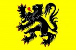

El blog-guía escrito por españoles en Bruselas para los hispanoparlantes que viven aquí y para los turistas que aprovechan los vuelos baratos para descubrir el chocolate, la cerveza, la Grand Place y tantas otras cosas buenas.
Categoría: Gran Bruselas
Bruselas es una ciudad pequeña pero con un área de influencia bastante grande. Todo Bélgica queda a un tiro de piedra. El gran cajón de sastre en el que podŕía caber todo el blog.
Esta semana Hispagenda viene cargadita, no os perdáis su super agenda:
Hola amigos, esta semana está repleta de actividades:
Queremos destacar la celebración del Día del Español, que tendrá lugar el sábado 19 de junio en la sede del Instituto Cervantes(Av. Tervuren, 64 – 1040 Bruselas).
Por otra parte, a los 20 primeros voluntarios que visiten la sede del Instituto Cervantes les regalarán el equipamiento oficial del Día E y les harán una fotografía de recuerdo.
Por último, una vez finalizadas las actividades, tendrá lugar una comida española en las instalaciones del centro.
Como ya sabéis todos, el11 de junio comenzó elMundial 2010 de fútbol, el primero en celebrarse en suelo africano.Por su parte, España ha quedado enmarcada en el Grupo H junto con Suiza,Honduras y Chile, con los que jugará los siguientes días:
16/06 en Durban a las 16 h.: España vs. Suiza
21/06 en Johannesburgo a las 20:30 h.: Españavs. Honduras
25/06 en Tshwane / Pretoria a las 20:30 h.: Chilevs. España
Y “El Brujo” nos hechizó…
Rafael Álvarez “El Brujo” estuvo en Bruselas para presentar su obra de teatro “El Testigo”. Este evento, organizado por la Consejería Cultural de la Embajada de España, está enmarcado dentro de los actos programados con motivo de laPresidencia española de la Unión Europea.
El Théâtre Royal du Parc acogía el espectáculo. Sobre el escenario, 15 sillas, tres mesas, tres botellas de vino y varios vasos nos trasladan a la típica taberna de cualquier pueblo andaluz. Las luces se apagan, la música comienza a sonar y aparece El Brujo.
Menos de cinco minutos bastaron para arrancar las primeras risas del público. El Brujo va cambiando de mesa a su antojo en su ficticio bar. Esta vez narra en su obra las anécdotas del “cantaor” imaginario Miguel Pantalón, salido de uno de los textos escritos por el autor gaditano Fernando Quiñones e incluido en su libro “Nos han dejado solos”. Miguel “El ídolo” era “feo de cojones. Miraba como si estuviese insultando a alguien”, cuenta El Brujo, quien no deja de interactuar con el público, que le agradece su espontaneidad y arte con aplausos. Seguir leyendo →
Como siempre, en nuestra AGENDA podéis encontrar todos los eventos y la información necesaria para los españoles en Bélgica.
Con la vista puesta en el verano, me he lanzado de nuevo a la búsqueda de un curso de flamenco y alei que me permita comunicarme en neerlandés (¡cómo te envidio Josel3!). Rebuscando entre mis notas he encontrado esta lista de universidades y academias en las que poder estudiar esta lengua tan jonda:
Nederlandse Academie en Bruselas: el forcing neerlandés que anuncian en la radio. Tengo un amigo que ha estudiado allí y está bastante contento, aunque el ha hecho los dos últimos módulos.
CERAN en Spa: Extremadamente caro pero muy recomendado por mis amigos que han estudiado allí.
CLL: Los cursos y los profesores suelen ser buenos.
Lerian NT: ni flowers. Me lo recomendó un amigo hace tiempo pero de oidas.
Si tenéis mucho tiempo y queréis gastar poco dinero, para hacer cursos en Bruselas podéis ir también a la Casa del Neerlandés (Huis van het Nederlands / La maison du Néerlandais), donde os redirigirán hacia alguna de las academias con las que trabajan. Si estás en paro los cursos son gratis y en función de la comuna en la que residas puede que solo tengas que pagar el libro. Allí me enviaron a hacer un curso con CVO Lethas (están en la Place Rouppe) que no recomiendo: te hacen perder muchísimo tiempo para avanzar muy poco. Yo hice el curso intensivo de verano y lo único intensivo era el horario: seis semanas, cuatro horas diarias de las que tres te las pasas mirándote los pies, y tan solo se ve la mitad del primer módulo.
¿Habéis estudiado en alguno de estos centros? ¿Conocéis alguno más? ¿Cuál recomendaríais?
Los chicos de la asociación Hêbê Asbl tienen un método. Lo llaman “The Brussels way of Life”. A que se refieren con esto? Gente de diferentes nacionalidades que disfrutan viviendo en Bruselas y se reunen en comités para hacer proyectos creativos y deportivos para la comunidad y sin ánimo de lucro. Han hecho ya cosas importantes, una liga de futbol multitudinaria, teatro, debates…
Hêbê Logo
He participado en el comité de Fiesta. El resultado se verá el sábado 19 de junio en la Brasserie Vellevue. Han participado más de 10 personas cada una arrimando el hombro como puede: “yo conozco a un DJ…”, “yo puedo contactar a mi amigo que es técnico de sonido…”, “yo pongo la casa y cocino una Frikadelu Zupa…”. Asi todos hemos intercambiado ideas y sobre todo compartido experiencias por el camino. Es el método Hebe, un modelo efectivo de Europa en movimiento.
En la práctica. El sábado 19 va a haber visuales, una charanga de locos, djs de gran calidad, comida y buen espiritu multicultuur-groove.
¡Empieza la Euroferia de Bruselas! Gracias al equipo de Hispagenda por compartir la buena nueva:
Hola amigos:
Mañana comienza la EuroFeria andaluza, que vestirá al Atomium de “faralaes” del3 al 6 de junio.
El pistoletazo de salida tendrá lugar mañana a las 17 h. con la apertura de la décima octava edición de laEuroFeria, momento a partir del cual disfrutaremos de cuatro días de fiesta llenos de buen ambiente, música y espectáculos.
Este año, la EuroFeria contará, entre otras, con las actuaciones del grupo cordobés Estirpe, del guitarrista y cantante Rafael de Alcalá, de la bailaora Yulia Lazaretina y del conjunto de danza Pasión Española.


{kind=link}